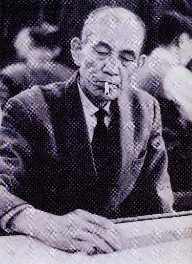
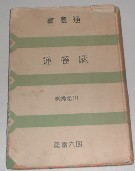
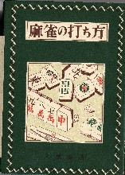
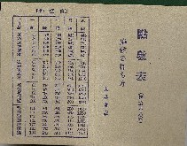
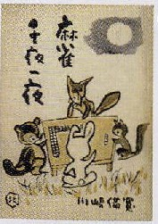
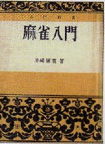
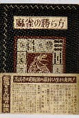
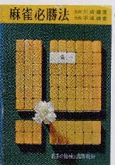
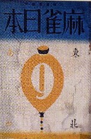

正しくは「かわさき よしひろ」、普通、「かわさき びかん」と音読みする。

明治24年、大阪府に生まれた。関西大学(政治部)中退後、文筆活動に入り文壇で注目される。
大正13年、かのプランタンで麻雀が始まった頃、顔を出し、そこで手を染める。
昭和４年、日本麻雀連盟創立とともに参加、同時に中央委員に就任。昭和５年、当時の最高段位、７段となる。昭和７年、麻雀団体が合併して大日本麻雀連盟が結成されたとき、機関誌「麻雀日本」の編集長に就任。
第二次大戦後の昭和23年、同連盟再建にあたり、関東本部幹事長に就任。昭和28年、理事長に就任。昭和34年副総裁。昭和36年、同連盟最初の九段。昭和38年３月26日急逝。死後、名人位を追贈される。これは日本麻雀連盟最初で最後の名人位である。
著作は数多いが、なかでも「麻雀の打ち方(S24大泉書店)」は第二次大戦後の戦術書ベスト10中の１冊。
著作一覧
・麻雀通（四六書院 昭５刊 70銭）
・麻雀早和り法とガメクリ法（誠文堂十銭文庫昭６刊）
・麻雀高等新戦術（誠文堂十銭文庫 昭６刊）
・麻雀新戦術（誠文堂文庫 昭７刊 25銭）
・麻雀の打ち方（大泉書店 昭24刊 160円）
・麻雀千夜一夜（明玄書房 昭28刊 200円）
・麻雀入門（川津書店 昭29刊150円）
・麻雀の勝ち方（大泉書店 昭31刊 160円）
・最新麻雀入門（川津書店 昭32刊150円）
・麻雀必勝法（虹有社 昭41刊 手塚晴雄共著）
・麻雀日本創刊号（麻雀日本杜 昭7刊30銭）
「麻雀通」は四六書院の通叢書（つうそうしょ）の一環。発行部数が少なかったので入難度はHレベル。内容も面白く、雀学度も高い。

「麻雀早和り法とガメクリ法」、「麻雀高等新戦術」、「麻雀新戦術」は戦術書なので、雀学度とか影響度は特にない。しかし「麻雀早和り法とガメクリ法」、「麻雀高等新戦術」は、かの有名な誠文堂十銭文庫。いまとなっては超貴重本で入難度もH。
「麻雀の打ち方」は、戦後初の戦術書ベストセラー。戦術書なので雀学度はないが、後発の戦術書に与えた影響度はＨ。それでもベストセラーとして何度も増刷されたので、初版にこだわらなければ、入難度はＬ。ただし初版となると入難度Ｓ。たとえ増版本でも、付録の点数表つきの完品となると、やはり入難度Ｓ。
 
「麻雀千夜一夜」は、随筆。いろいろ参考になることも記されている。入難度Ｍ 雀学度Ｍというところ。「麻雀入門」は、入難度Ｍ。
 
「麻雀の勝ち方」は、「麻雀の打ち方」の続編。これもよく売れたし、昭和31年刊と比較的新しいので、初版にこだわらなければ入難度Ｌ（初版でもＭか）。「最新麻雀入門」、「麻雀必勝法」は、入難度Ｌ。
 
「麻雀日本（創刊号）」は、著書ではなく、川崎氏が編集長を務めた雑誌。創刊号とあるが、たしか創刊号しか発刊されなかった。

|